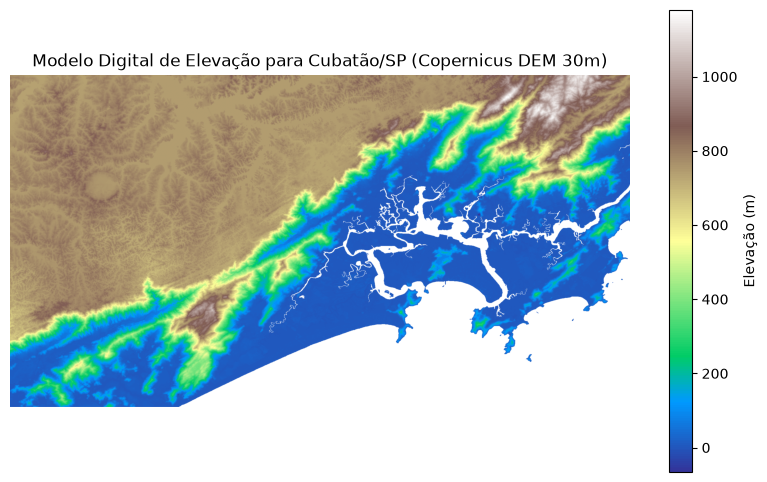
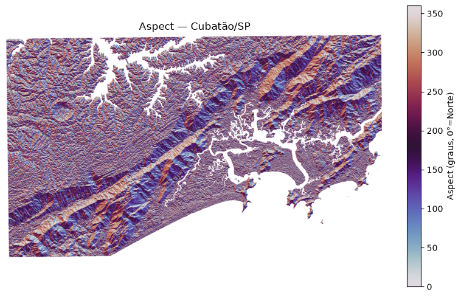
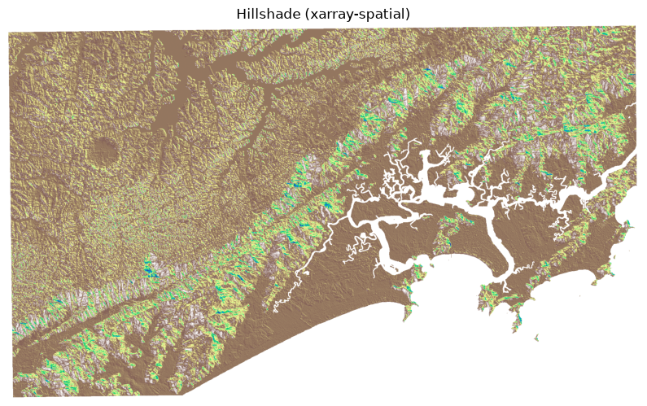
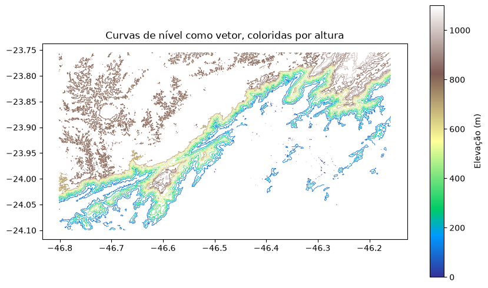
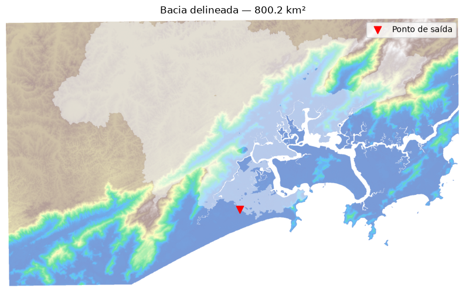

from pystac_client import Clientimport rasteriofrom rasterio.windows import from_boundsfrom rasterio.merge import mergefrom pyproj import Transformerimport numpy as npimport matplotlib.pyplot as pltfrom matplotlib.colors import ListedColormapimport seaborn as snsimport psutilimport os from dotenv import load_dotenvload_dotenv()
True
Os modelo digital de elevação é uma representação digital da altitude da superfície terrestre, em que cada célula do grid contém um valor de elevação. Ele normalmente é utilizado para análises de declives, relevos para projetos de infraestrutura bem como planejamento urbano. Muito utilizado também dentro da hidrologia para escoamento das águas, bacias hidrográficas e análise de riscos de inundação.
Utilizaremos o DEM do Copernicus, que é um DEM produzido principalmente a partir de dados de radar obtidos pela missão espacial TanDEM-X, da Airbus/DLR. Os satélites adquiriram imagens radar da superfície terrestre de diferentes posições; através de interferometria radar (InSAR) foi possível calcular a altitude dos pontos da superfície. Esses dados foram depois processados, corrigidos e editados para gerar uma superfície de elevação contínua. O resultado é disponibilizado, entre outras resoluções, a 30 m (GLO-30) e 90 m (GLO-90).
Uma importante consideração é que o Copernicus DEM representa um modelo digital de superfície (Digital Surface Model (DSM)) e não o modelo digital do terreno (Digital Terrain Model) onde este sim representaria a altitude de cada ponto sem contar a utilização da superfície. Dessa forma, o DSM do Copernicus pode incluir altura de edificios, altura de árvores e outras estruturas, apesar de suas correções que melhorar a qualidade do modelo, a remoção sistemática desses artefatos não é feita, pois o modelo visa representar a superfície terrestre, diferentemente de representar o terreno em si.
Chaves de API de acesso.
Para baixarmos os rasters referente a nossa análise, precisamos primeiro ter registrado uma chave api no CDSE. Olhe a última aula com a explicação de como criar essa chave.
Code
#os.environ["GDAL_HTTP_TCP_KEEPALIVE"] = "YES"os.environ["AWS_S3_ENDPOINT"] ="eodata.dataspace.copernicus.eu"os.environ["AWS_ACCESS_KEY_ID"] = os.environ.get("CDSE_CLIENT")os.environ["AWS_SECRET_ACCESS_KEY"] = os.environ.get("CDSE_SECRET")os.environ["AWS_HTTPS"] ="YES"os.environ["AWS_VIRTUAL_HOSTING"] ="FALSE"# endpoint da AWS pro ecossistema copernicus no STACcdse_stac ="https://stac.dataspace.copernicus.eu/v1/"client = Client.open(cdse_stac)
Acessando a coleção através do STAC
Code
client.get_collection('cop-dem-glo-30-dged-cog')
<CollectionClient id=cop-dem-glo-30-dged-cog>
type"Collection"
id"cop-dem-glo-30-dged-cog"
stac_version"1.1.0"
description"This Collection provides Copernicus DEM COG products, which represent the surface of the Earth including buildings, infrastructure and vegetation, in resolution of 30 meters."
description"This endpoint provides access to EO data which is stored on the object storage of both CloudFerro Cloud and OpenTelekom Cloud (OTC). See the [documentation](https://documentation.dataspace.copernicus.eu/APIs/S3.html) for more information, including how to get credentials."
requester_paysFalse
creodias-s3
type"custom-s3"
title"CREODIAS S3"
platform"https://eodata.cloudferro.com"
description"Comprehensive Earth Observation Data (EODATA) archive offered by CREODIAS as a commercial part of CDSE, designed to provide users with access to a vast repository of satellite data without predefined quota limits"
# Open the DEMs as Rasterio datasetssrcs = [rasterio.open(path) for path in dem_paths]try:# CRS of the DEMs dem_crs = srcs[0].crs# Transform bbox from EPSG:4326 to DEM CRS transformer = Transformer.from_crs("EPSG:4326", dem_crs, always_xy=True ) minx, miny = transformer.transform(bbox[0], bbox[1]) maxx, maxy = transformer.transform(bbox[2], bbox[3])# Merge the two DEM tiles and clip to bbox mosaic, mosaic_transform = merge( srcs, bounds=(minx, miny, maxx, maxy), masked=True )# Remove the band dimension dem_array = mosaic[0]finally:# Close the datasetsfor src in srcs: src.close()print("Shape:", dem_array.shape)print("CRS:", dem_crs)print("Transform:", mosaic_transform)
Temos um array com a elevação de Cubatão/SP (base da Serra do Mar) — a região vai de quase o nível do mar até mais de 1.100 m, numa distância bem curta, por causa da escarpada. Isso vai deixar as curvas de nível bem interessantes de ver.
Vamos criar dois tipos de visualização: 1. Um mapa de elevação simples (cada cor = uma altura); 2. Um relevo sombreado (hillshade), que simula a luz do sol vindo de um ângulo para destacar o relevo.
Code
fig, ax = plt.subplots(figsize=(10, 6))im = ax.imshow(dem_array, cmap="terrain")fig.colorbar(im, ax=ax, label="Elevação (m)")ax.set_title("Modelo Digital de Elevação para Cubatão/SP (Copernicus DEM 30m)")ax.axis("off")plt.show()

Características de Modelos Digitais de Elevação
Aqui conseguimos calcular alguns padroes como hillshade, angulo de inclinação, declive, e aspecto do terreno, que é basicamente para qual direção do globo aquela face do terreno está apontando.
Isso pode ser extremamente útil quando estamos pensando em termos de planejamento. Exemplo: Você está analisando um terreno de um comprador que gostaria de construir o quarto da casa virado para a face Norte. Para estabelecer curvas de níveis precisamos também dessas características, bem como para análise hidrológicas.
Aqui vai um detalhe mega importante que já tratamos nas outras aulas. SISTEMA DE COORDENADAS. Esse DEM está em EPSG:4326 (graus, não metros)(Sistema Geográfica não projetado). Para o sombreado ficar com as proporções certas, precisamos converter o tamanho do pixel de graus para metros antes de calcular a inclinação, isso é, projetar para o UTM da nossa área de investigação.
import xarray as xrimport rioxarray # pegamos o numero de colunas e linhas rows, cols = dem_array.shape## transformamos cada coluna e linha dado a transformacao affine do CRS## essa soma do 0.5 visa mudar a posicao do canto esquerdo para o centro de cada pixel## pense que um pixel de raster esta na coordenada 100 em seu canto superior esquerdo e esse pixel tem 30m de largura## entao para movermos para o meio, precisamos somar com 15m, ou 0.5 vezes o tamanho original do pixel.xs = mosaic_transform.c + (np.arange(cols) +0.5) * mosaic_transform.ays = mosaic_transform.f + (np.arange(rows) +0.5) * mosaic_transform.e# vamos criar um XARRAY para utilizar as funções já existentes dem_da = xr.DataArray( np.ma.filled(dem_array, np.nan), dims=("y", "x"), coords={"y": ys, "x": xs}, name="elevation",)# Aqui ordenamos o CRS que esta em 4326 - WGS84dem_da = dem_da.rio.write_crs(dem_crs)# xarray tem funcoes uteis para estiamr o CRS, apesar de podermos reprojetar na mao também. utm_crs = dem_da.rio.estimate_utm_crs()dem_utm = dem_da.rio.reproject(utm_crs)dem_utm.rio.write_nodata(np.nan, inplace=True)print("CRS estimado:", utm_crs)print("shape:", dem_utm.shape, "| resolução (m):", dem_utm.rio.resolution())
Uma vez que temos nossos dados em xarray e projetados, podemos prosseguir com essas análises de uma maneira muito fácil e simplificada. Poderíamos também fazer esses mesmo calculos em numpy, contudo, é muito mais trabalhoso e suscetível a erros.
A biblioteca xarray-spatial já traz essas funções prontas, testadas e otimizadas. Xarray nada mais é do que um numpy array com nomes, coordenadas e metadados associados, criando um cubo tri ou quadridimensional (x,y,z,time) para qualquer variável. Xarray nos permite ter coleções de dados com muitas e muitas variáveis, como é o caso do dataset ERA5, que contém muito dados climáticos em um só dataset.
Vamos nos aprofundar em xarray na semana que vem, mas hoje teremos uma breve introdução e como essa biblioteca funciona.
Vamos ver três análises clássicas de terreno: hillshade, slope (inclinação) e aspect (orientação).
A ideia é para cada pixel, calculamos primeiro a inclinação (slope) e depois a direção do declive (aspect) do terreno. Por fim imitamos a iluminação do sol dado um ângulo de azimute e altura escolhido.
Só por curiosidade, vamos ver como calcular todas as funções que o xarray proporciona em numpy, e depois realizar o mesmo em Xarray!
Slope mede o quão íngreme é o terreno em cada pixel, em graus onde 0° é totalmente plano, 90° seria uma parede vertical. É uma das métricas mais usadas em geomorfologia como risco de deslizamento, erosão, dificuldade de uma trilha, viabilidade de construção, tudo depende da inclinação do terreno.
Aspect indica para que direção a encosta está voltada. Vai de 0° a 360°, como uma bússola (0°/360° = Norte, 90° = Leste, 180° = Sul, 270° = Oeste). É importante porque, no hemisfério sul, encostas voltadas para o norte recebem mais sol ao longo do ano (e as voltadas para o sul, menos), afetando o ambiente tais como vegetação, umidade do solo, e até microclima. Um terreno que é perfeitamente plano teoricamente não teria uma direção definida e a biblioteca marca esses pixels com -1.
Como aspect “dá a volta” (0° e 360° são a mesma direção), usamos um colormap cíclico em vez de um linear.
Code
from xrspatial import aspect as xrs_aspectaspect_da = xrs_aspect(dem_utm)aspect_plot = aspect_da.where(aspect_da >=0) # esconde os pixels planos (-1) do mapafig, ax = plt.subplots(figsize=(10, 6))im = ax.imshow(aspect_plot, cmap="twilight", vmin=0, vmax=360)fig.colorbar(im, ax=ax, label="Aspect (graus, 0°=Norte)")ax.set_title("Aspect — Cubatão/SP")ax.axis("off")plt.show()

Hillshade
Mesmo calculo de antes, mas com a implementação pronta da biblioteac. Simulamos a luz do sol vindo de um azimute e altura escolhidos.
Code
from xrspatial import hillshade as xrs_hillshadeshade_xrs = xrs_hillshade(dem_utm, azimuth=315, angle_altitude=45)fig, ax = plt.subplots(figsize=(10, 6))ax.imshow(shade_xrs, cmap="terrain")ax.set_title("Hillshade (xarray-spatial)")#fig.colorbar(im, ax=ax, label="Elevação (m)")ax.axis("off")plt.show()

Curvas de nível (contour lines)
Uma curva de nível conecta todos os pontos com a mesma elevação. Vamos gerar curvas a cada 100 metros, o mesmo intervalo que vamos usar mais adiante quando transformarmos essas curvas em vetores.
Por enquanto isso é só uma visualização (o matplotlib calcula as curvas em cima do array, em coordenadas de pixels que ainda não são objetos vetoriais georreferenciados). Na próxima etapa vamos extrair essas mesmas curvas como geometrias vetoriais.
intervalo =100# metrosnivel_min = np.floor(dem_array.min()/intervalo) *intervalonivel_max = np.ceil(dem_array.max()/intervalo) *intervalo niveis = np.arange(nivel_min, nivel_max + intervalo, intervalo)print("Níveis (m):", niveis)fig, ax = plt.subplots(figsize=(10, 6))im = ax.imshow(dem_array, cmap="terrain")fig.colorbar(im, ax=ax, label="Elevação (m)")contornos = ax.contour(dem_array, levels=niveis, colors="black", linewidths=0.4)# só rotula a cada 200 m (de 100 em 100 fica ilegível no platô, onde o relevo é mais suave)ax.clabel(contornos, levels=niveis[::2], inline=True, fontsize=7, fmt="%d m")ax.set_title(f"Curvas de nível a cada {intervalo} m")ax.axis("off")plt.show()
As curvas que acabamos de desenhar existem só dentro do objeto do matplotlib (contornos) as quais são ótimas para visualizar, mas não servem para nada além de visualização. Se quisermos aplicar todas as análises espaciais as quais já temos conhecimento, precisamos vetorizar essas linhas.
A ideia aqui é simples: o matplotlib já calculou, para cada nível, uma ou mais linhas — cada uma como uma lista de pontos em coordenadas de pixel (cs.allsegs). Nós só precisamos:
Pegar esses pontos (coluna, linha);
Converter para coordenadas reais (x, y) usando a dem_transform que guardamos;
Montar uma LineString do shapely para cada segmento;
Guardar tudo num GeoDataFrame, com a elevação como uma coluna normal.
A partir daí, cada curva de nível vira uma linha “de verdade” — dá pra fazer gdf.intersects(ponto), gdf.length, salvar em disco, etc.
Code
import geopandas as gpdfrom shapely.geometry import LineStringfrom rasterio.transform import xy as transform_xydef contours_to_geodataframe(contour_set, transform, crs) -> gpd.GeoDataFrame:"""Converte um QuadContourSet do matplotlib em um GeoDataFrame de linhas (uma por segmento).""" geometries = [] elevations = []for level, segments inzip(contour_set.levels, contour_set.allsegs):for seg in segments:iflen(seg) <2:continue# precisa de pelo menos 2 pontos pra formar uma linha cols, rows = seg[:, 0], seg[:, 1] xs, ys = transform_xy(transform, rows, cols) # pixel para coordenadas reais geometries.append(LineString(zip(xs, ys))) elevations.append(level)return gpd.GeoDataFrame({"elevation": elevations}, geometry=geometries, crs=crs)contornos_gdf = contours_to_geodataframe(contornos, mosaic_transform, dem_crs)print(f"{len(contornos_gdf)} segmentos de curva de nível")contornos_gdf.head()
fig, ax = plt.subplots(figsize=(10, 6))contornos_gdf.plot(column="elevation", cmap="terrain", legend=True, legend_kwds={"label": "Elevação (m)"}, linewidth=0.6, ax=ax)ax.set_title("Curvas de nível como vetor, coloridas por altura")ax.set_aspect("equal")plt.show()

A partir do momento que vetorizamos esse raster, podemos aplicar qualquer analise espacial que ja conhecemos
Code
from shapely import Point# Exemplo: Vamos achar todas as curvas a menos de 200 metros do centroid de um ponto# pra consultas com distância em metros, reprojetamos pra um CRS métricocontornos_gdf_utm = contornos_gdf.to_crs(contornos_gdf.estimate_utm_crs())# ponto exemplo: -23.85, -46.7ponto_exemplo = gpd.GeoDataFrame(geometry=[Point(-46.7,-23.85)],crs="4326").to_crs(contornos_gdf_utm.crs)ponto = ponto_exemplo.geometry.iloc[0]curvas_proximas = contornos_gdf_utm[contornos_gdf_utm.geometry.distance(ponto) <500]print(f"{len(curvas_proximas)} segmentos de curva a menos de 200 m do ponto de exemplo")# é exatamente esse tipo de consulta espacial que vamos usar depois para# cruzar pontos (ex: nascentes, trilhas) com a curva de nível mais próxima
2 segmentos de curva a menos de 200 m do ponto de exemplo
Code
curvas_proximas
elevation
geometry
1266
800.0
LINESTRING (327012.225 7361058.891, 327040.404...
1267
800.0
LINESTRING (326673.066 7361024.435, 326701.424...
Modelo Digital de Elevação em 3D
Vamos usar plotly.graph_objects.Surface, que já renderiza como uma superfície 3D interativa (dá pra rotacionar, dar zoom e passar o mouse pra ver a elevação exata) sem precisar de nenhuma biblioteca 3D pesada.
Dois truques para visualização em 3 dimensões: - A grade tem muitos pixels (centenas de milhares), por isso vamos reduzir a amostragem (::3) só pra manter a interação fluida no navegador, para uma imagem final de alta qualidade, poderíamos usar a resolução completa. Caso seu computador ainda demore, tente reduzir a amostragem ainda mais. - Nossa área é bem mais larga do que alta (dezenas de km de largura, ~1 km de desnível) e caso plotarmos na escala real, o relevo pareceria quase liso. Por isso aplicamos uma exageração vertical, uma prática comum em visualização de terreno.
Unable to display output for mime type(s): application/vnd.plotly.v1+json
Operações para análises Hidrológicas
Delineação de bacias hidrográficas (watershed)
Aos amantes de hidrologia, ou amantes da água que bebemos, podemos pensar em bacias hidrográficas como delineação de toda a área de contribuição cuja água do ciclo hidrólogico passará por um determinado ponto, sendo esse ponto o exutório (pour point), o exutório final das bacias hidrográficas é na grande maioria dos casos o mar, contudo a diferente localização de um exutório pode delinear diferentes bacias hidrógraficas.
O pipeline clássico de hidrologia de terreno é sempre parecido:
Preencher depressões: Os DEMs possuem sempre dados faltantes, devido a (ruído/erro de medição) que prendem o fluxo de água num loop infinito. Precisamos “encher” esses buracos antes de continuar.
Direção de fluxo (flow direction) — para cada pixel, calculamos para qual dos 8 vizinhos a água escorreria (o vizinho com a maior queda de altitude)? Isso é o método D8.
Fluxo acumulado (flow accumulation) — para cada pixel, quantos pixels “rio acima” desembocam nele? Pixels com fluxo acumulado alto são, por definição, onde os rios estão.
Delineação da bacia — a partir de um ponto de saída, “andamos rio acima” seguindo as direções de fluxo e marcamos toda a área que contribui pra aquele ponto.
Vamos usar o pysheds, a biblioteca Python mais usada especificamente pra isso.
Code
# o pysheds ainda usa `np.in1d`, que foi removido do numpy 2.x (virou `np.isin`).# esse "remendo" resolve a incompatibilidade sem precisar trocar de versão do numpy.ifnothasattr(np, "in1d"): np.in1d = np.isinfrom pysheds.grid import Grid
O pysheds lê de um arquivo raster no disco (não de um array em memória), então vamos exportar o dem_utm (o mesmo tipo de exportação que já fizemos antes) e carregar a partir dele.
Precisamos escolher um ponto de saída pra “cortar” a bacia. Pra garantir que caímos em cima de um rio de verdade (e não no meio de um morro), vamos usar o pixel com maior fluxo acumulado de toda a nossa área, por definição, ali passa mais água do que em qualquer outro lugar da nossa grade.
Numa aplicação real, você normalmente escolheria esse ponto manualmente (ex: onde fica uma estação fluviométrica, ou a foz de um rio específico) e usaria grid.snap_to_mask pra “encaixar” as coordenadas escolhidas em cima do pixel de rio mais próximo.
Code
row_pour, col_pour = np.unravel_index(np.argmax(acc), acc.shape)x_pour, y_pour = grid.affine * (col_pour, row_pour)print(f"Ponto de saída escolhido: ({x_pour:.0f}, {y_pour:.0f}) | fluxo acumulado: {acc.max():.0f} pixels")catchment = grid.catchment(x=x_pour, y=y_pour, fdir=fdir, dirmap=dirmap, xytype="coordinate")cellsize =abs(grid.affine[0])area_km2 = catchment.sum() * (cellsize **2) /1e6print(f"Área da bacia: {area_km2:.1f} km² ({catchment.sum()} pixels)")# repare: o número de pixels da bacia é EXATAMENTE o fluxo acumulado no ponto de saída —# não é coincidência, é a própria definição de fluxo acumulado!fig, ax = plt.subplots(figsize=(10, 6))ax.imshow(dem_utm, cmap="terrain", alpha=0.6)ax.imshow(np.where(catchment, 1, np.nan), cmap="Blues", alpha=0.5)ax.scatter([col_pour], [row_pour], color="red", marker="v", s=80, label="Ponto de saída")ax.set_title(f"Bacia delineada — {area_km2:.1f} km²")ax.legend()ax.axis("off")plt.show()
Ponto de saída escolhido: (350235, 7344724) | fluxo acumulado: 961366 pixels
Área da bacia: 800.2 km² (961366 pixels)

Vetorizando a bacia e extraindo a rede de rios
Por fim, dois produtos vetoriais a partir dessa análise:
O polígono da bacia (grid.polygonize()), pra virar um GeoDataFrame, igual fizemos com as curvas de nível;
A rede de drenagem (os rios), extraída diretamente do DEM a partir de um limiar de fluxo acumulado. Tentamos também puxar hidrografia do OpenStreetMap (via osmnx) pra comparar, mas o servidor Overpass não estava acessível a partir daqui — então ficamos só com a rede derivada do próprio DEM, que já é uma fonte de dado hidrográfico legítima (é basicamente assim que produtos como o HydroSHEDS são gerados). Poderíamos tentar puxar a rede da ANA (Agência Nacional de Águas) mas ainda não existe uma biblioteca em python para fazer isso automaticamente (FICA AI A DICA PARA UM GRANDE PROJETO FINAL)
from shapely.geometry import shape as shapely_shape# 1. bacia como polígonoshapes =list(grid.polygonize(data=catchment.astype("int32"), mask=catchment))bacia_gdf = gpd.GeoDataFrame( geometry=[shapely_shape(geom) for geom, _ in shapes], crs=grid.crs,)print(f"Bacia: {len(bacia_gdf)} polígono(s), área = {bacia_gdf.geometry.area.sum() /1e6:.1f} km²")# 2. rede de rios: qualquer pixel com fluxo acumulado acima de um limiar vira "rio"limiar_rio =500# em número de pixels contribuindo (500 px * ~28x28m ≈ 0.4 km² de área de captação)branches = grid.extract_river_network(fdir, acc > limiar_rio, dirmap=dirmap)rios_gdf = gpd.GeoDataFrame.from_features(branches["features"], crs=grid.crs)print(f"Rede de rios: {len(rios_gdf)} trechos")fig, ax = plt.subplots(figsize=(10, 6))ax.imshow(dem_utm, cmap="Greys_r", alpha=0.5, extent=[dem_utm.x.min(), dem_utm.x.max(), dem_utm.y.min(), dem_utm.y.max()])bacia_gdf.boundary.plot(ax=ax, color="red", linewidth=1.5, label="Limite da bacia")rios_gdf.plot(ax=ax, color="blue", linewidth=0.8, label="Rede de drenagem")ax.set_title("Bacia delineada + rede de rios extraída do DEM")ax.legend()plt.show()
Bacia: 12 polígono(s), área = 800.2 km²
Rede de rios: 2610 trechos